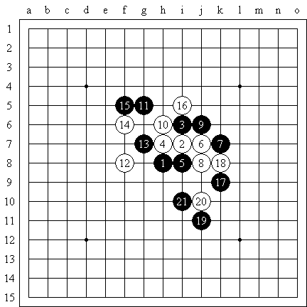

山口釉水的寒恒星居然还能赢
#1 山口釉水的寒恒星居然还能赢作者：江南新绿 发表时间：2008-9-17 12:30:59
棋谱网址：
http://www.renjusha.net/honbu/08/46MeijinA5.html
上周末我用寒星对付江苏队三名棋友，三次均败下阵来。所以觉得寒恒星真的没有什么可以下了。山口的实战对局，黑方黒 五段 畑 雅幸比较弱的。是４６名人中段位最低的。山口之所以对他开溪峡转寒恒，也许有藐视的意思。不过这位五段的中局实力还是偏弱。１５手如果走１４上面，１６只有在上面防守７和９，接下来１７＝１５防守要点山口就难了。实战定型太早，后面黑棋只能弃上攻下，弃左攻右。
不过山口釉水的防守还是令人称道的。尤其是２６手，居然不防守中间，利用后面造长连禁手把最终把黑棋装进去。

参考棋谱如图：
#2 Re:山口釉水的寒恒星居然还能赢作者：掌棋宣传员 发表时间：2008-9-18 14:33:02

#3 Re:山口釉水的寒恒星居然还能赢作者：oddgod 发表时间：2008-9-19 13:37:55
山口发誓不开恒寒了，所以改开溪峡了，哈哈#4 Re:山口釉水的寒恒星居然还能赢作者：Solmyr 发表时间：2008-9-19 16:33:14
 发现山口老兄果真有胆量啊！什么都感用！
发现山口老兄果真有胆量啊！什么都感用！
#5 Re:山口釉水的寒恒星居然还能赢作者：茗弈如梦 发表时间：2008-10-13 17:11:55
太喜欢寒星了,,哪位大师有谱的,传好上来分享